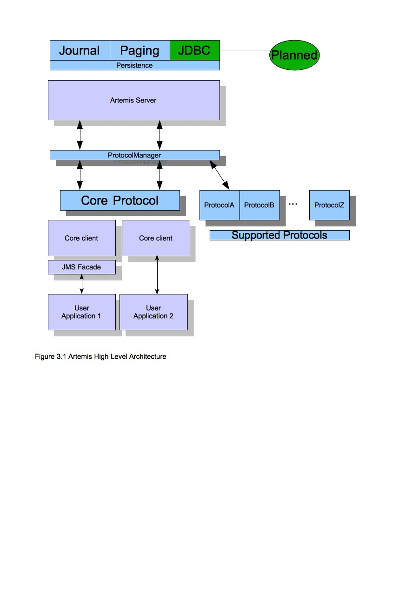
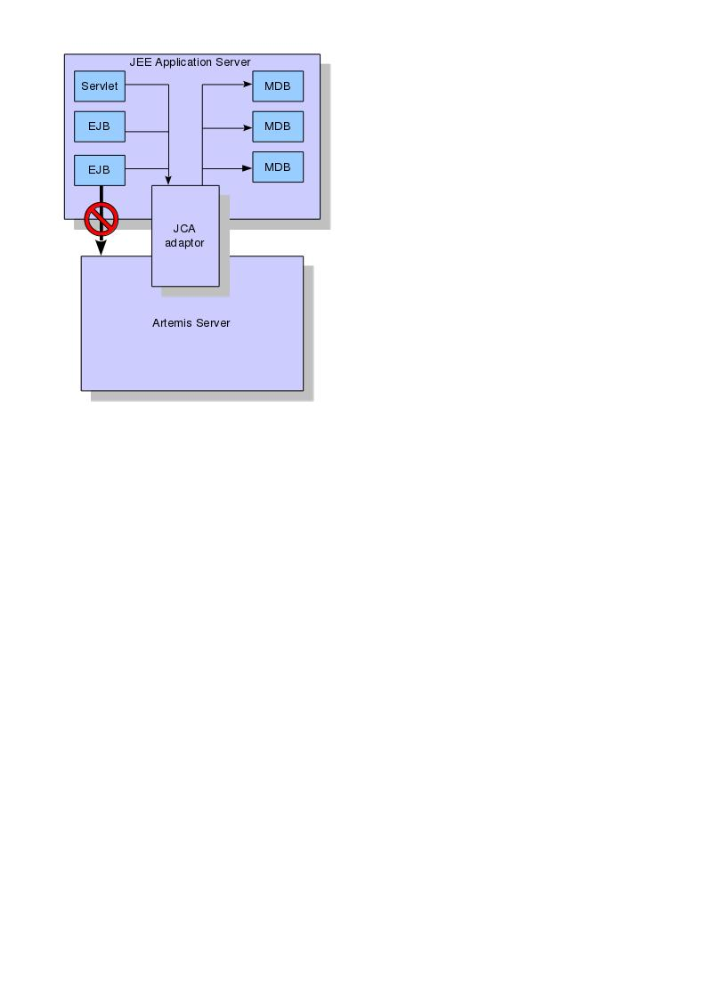

In this section we will give an overview of the Apache ActiveMQ Artemis high level architecture.
Apache ActiveMQ Artemis core is designed simply as set of Plain Old Java Objects (POJOs) - we hope you like its clean-cut design.
We've also designed it to have as few dependencies on external jars as possible. In fact, Apache ActiveMQ Artemis core has only one jar dependency, netty.jar, other than the standard JDK classes! This is because we use some of the netty buffer classes internally.
This allows Apache ActiveMQ Artemis to be easily embedded in your own project, or instantiated in any dependency injection framework such as Spring or Google Guice.
Each Apache ActiveMQ Artemis server has its own ultra high performance persistent journal, which it uses for message and other persistence.
Using a high performance journal allows outrageous persistence message performance, something not achievable when using a relational database for persistence.
Apache ActiveMQ Artemis clients, potentially on different physical machines interact with the Apache ActiveMQ Artemis server. Apache ActiveMQ Artemis currently provides two APIs for messaging at the client side:
Core client API. This is a simple intuitive Java API that allows the full set of messaging functionality without some of the complexities of JMS.
JMS client API. The standard JMS API is available at the client side.
Apache ActiveMQ Artemis also provides different protocol implementations on the server so you can use respective clients for these protocols:
JMS semantics are implemented by a JMS facade layer on the client side.
The Apache ActiveMQ Artemis server does not speak JMS and in fact does not know anything about JMS, it is a protocol agnostic messaging server designed to be used with multiple different protocols.
When a user uses the JMS API on the client side, all JMS interactions are translated into operations on the Apache ActiveMQ Artemis core client API before being transferred over the wire using the Apache ActiveMQ Artemis wire format.
The server always just deals with core API interactions.
A schematic illustrating this relationship is shown in figure 3.1 below:

Figure 3.1 shows two user applications interacting with an Apache ActiveMQ Artemis server. User Application 1 is using the JMS API, while User Application 2 is using the core client API directly.
You can see from the diagram that the JMS API is implemented by a thin facade layer on the client side.
Apache ActiveMQ Artemis core is designed as a set of simple POJOs so if you have an application that requires messaging functionality internally but you don't want to expose that as an Apache ActiveMQ Artemis server you can directly instantiate and embed Apache ActiveMQ Artemis servers in your own application.
For more information on embedding Apache ActiveMQ Artemis, see Embedding Apache ActiveMQ Artemis.
Apache ActiveMQ Artemis provides its own fully functional Java Connector Architecture (JCA) adaptor which enables it to be integrated easily into any Java EE compliant application server or servlet engine.
Java EE application servers provide Message Driven Beans (MDBs), which are a special type of Enterprise Java Beans (EJBs) that can process messages from sources such as JMS systems or mail systems.
Probably the most common use of an MDB is to consume messages from a JMS messaging system.
According to the Java EE specification, a Java EE application server uses a JCA adapter to integrate with a JMS messaging system so it can consume messages for MDBs.
However, the JCA adapter is not only used by the Java EE application server for consuming messages via MDBs, it is also used when sending message to the JMS messaging system e.g. from inside an EJB or servlet.
When integrating with a JMS messaging system from inside a Java EE application server it is always recommended that this is done via a JCA adaptor. In fact, communicating with a JMS messaging system directly, without using JCA would be illegal according to the Java EE specification.
The application server's JCA service provides extra functionality such as connection pooling and automatic transaction enlistment, which are desirable when using messaging, say, from inside an EJB. It is possible to talk to a JMS messaging system directly from an EJB, MDB or servlet without going through a JCA adapter, but this is not recommended since you will not be able to take advantage of the JCA features, such as caching of JMS sessions, which can result in poor performance.
Figure 3.2 below shows a Java EE application server integrating with a Apache ActiveMQ Artemis server via the Apache ActiveMQ Artemis JCA adaptor. Note that all communication between EJB sessions or entity beans and Message Driven beans go through the adaptor and not directly to Apache ActiveMQ Artemis.
The large arrow with the prohibited sign shows an EJB session bean talking directly to the Apache ActiveMQ Artemis server. This is not recommended as you'll most likely end up creating a new connection and session every time you want to interact from the EJB, which is an anti-pattern.

For more information on using the JCA adaptor, please see Application Server Integration and Java EE.
Apache ActiveMQ Artemis can also be deployed as a stand-alone server. This means a fully independent messaging server not dependent on a Java EE application server.
The standard stand-alone messaging server configuration comprises a core messaging server and a JMS service.
The role of the JMS Service is to deploy any JMS Queue, Topic and ConnectionFactory instances from any server side JMS configuration. It also provides a simple management API for creating and destroying Queues and Topics which can be accessed via JMX or the connection. It is a separate service to the ActiveMQ Artemis core server, since the core server is JMS agnostic. If you don't want to deploy any JMS Queue or Topic via server side XML configuration and don't require a JMS management API on the server side then you can disable this service.
The stand-alone server configuration uses Airline for bootstrapping the Broker.
The stand-alone server architecture is shown in figure 3.3 below:
For more information on server configuration files see Server Configuration